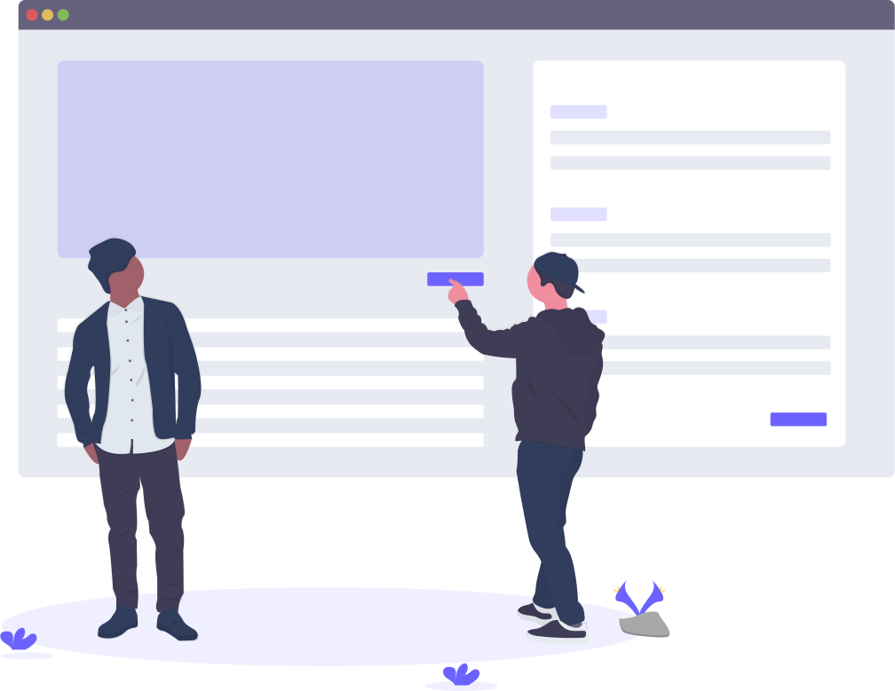
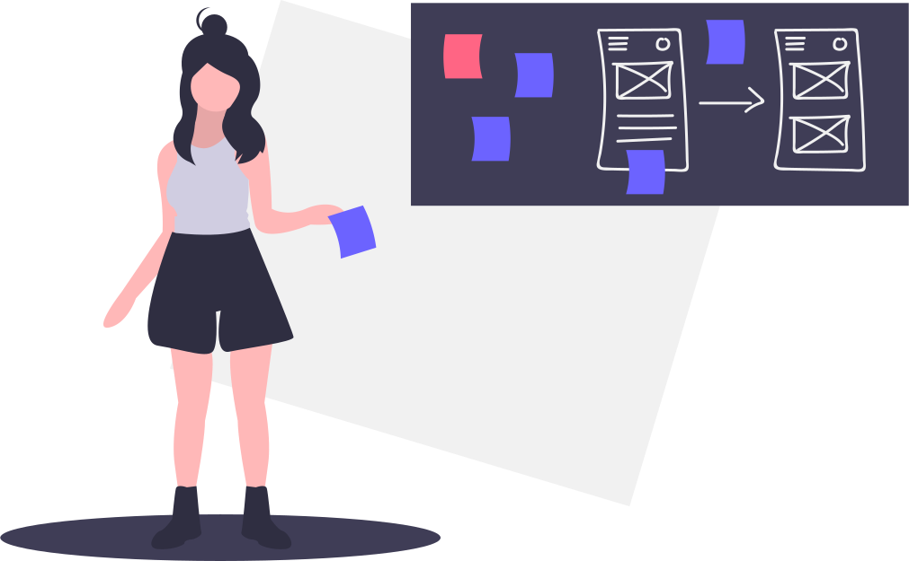

Garmin
User Experience Design Internship
Overview
During my time at Garmin, I was treated as a full time User Experience Designer in terms of workload and project responsibilities. I worked with my mentor, a Senior User Experience Designer, on a client project to design and provide a full infotainment and navigation system (both software and hardware) for one of their vehicle lines.
| Role | User Experience Design Intern |
|---|---|
| Team | Automotive OEM UX |
| Project | Car Infotainment System |
| Timeline | June - Sept 2019 |
Summary
Because the project is not yet complete, I am not allowed to share much information about the details for security reasons. However, at a high level, I worked with my team to define several features - System Settings, Bluetooth, Sirius XM, and some smaller features - for the infotainment system. I was also involved in user research and design exploration for a part of my internship. My deliverables for the team include wireframes, user flows, UX behavioral documentation for the developers, user research notes, and design improvements in their existing infotainment platform base.
Through this internship, I was able to enhance my skills in identifying user flows and patterns, creating large information architectural systems, technical writing, designing low fidelity mock-ups, presenting design documentations, and problem solving with real-world constraints.
My Design Process at Garmin
I was the primary UX designer for three main elements of the infotainment system - System Settings, Bluetooth, and Sirius XM. I worked with my mentor and team and designed these features' functions, layouts, flows, and interactions.
Going into this internship, I was eager to apply what I learned in school in the real-world industry. However, my main priority was learning as much as I could from my team and identify their design process. Because of my inclination to learn, my design process at Garmin was very reactive, instead of proactive.
1  Identifying the Foundation
Identifying the Foundation
For the various elements I worked on, my initial step was always to identify and understand any work that has been done on it. Over the years, there has been detailed research and thoughtful design done at Garmin that I wanted to make sure I built on. I analyzed multiple databases and documents to understand the product and its problem space.
2  Understanding the Context
Understanding the Context
With previous documentation, I would independently analyze the work then confirm my notes with my team. My team members were immensely helpful because they were the ones who created these design elements and interactions. In our discussions, I discovered several constraints, concerns, and factors affecting our possibilities.
3 Evaluating the Requirements
When I felt confident in my understanding of the feature and its existing iterations, I would then bring into considerations the requirements of the project. Luckily, it was easy to see the requirements of the project because there was a large database of written system requirements for each feature.
4  Synthesizing Better Designs
Synthesizing Better Designs
Using elements of the foundation that fulfilled the system requirements, I would organize low-fidelity wireframes and define what features needed to be added or improved in terms of layout, information architecture, and ease of use. I held many impromptu design reviews for my feature documentation with my team members to gain their insight and feedback.
5  Bringing in Technical Perspectives
Bringing in Technical Perspectives
With my feature documentation approved by the UX team, I would present the documentation to the developers assigned to the feature. Our developers also had a great history of development and interaction with Garmin products, so they would have great questions and revisions for the feature based on technical limitations.
6 Revising my Deliverables
Considering the constraints discussed by our developers, I would revise the feature documentation, occasionally redesigning the feature completely. Once the document was approved by the developers, they began software development. However, I would receive emails when our developers found new complications with the feature, so this last step was never really over.
Takeaways
Going into this internship, I wasn't sure what to expect given that it was going to be my first time working, living alone, in the Midwest, cooking for myself, and many other firsts. But I'm glad I decided to go through with this internship which was out of my comfort zone because I grew a lot as a person and a designer. I am grateful that I was able to experience and learn different perspectives from my team members and others at Garmin.
Collaboration = Communication
I learned working at Garmin is how important clear communication is. Meetings, emails, slack were my most important tools this summer. Being able to know where the project stands, what needs to be done, who are the right people to solve a problem, and who has the creative and technical insight needed for a task was immensely helpful in getting my work done.
Enough > Perfect
Moving forward is better than wasting time over a small detail. One of my weaknesses is that I tend to be a perfectionist, making sure everything is ideal and pixel-perfect. But, my team members taught me that prioritizing and revisiting ideas, problems, and projects is essential to keep the team and company moving forward.
Always Room for Improvement
I have always had a growth mindset, but this summer really humbled me in terms of research and design. It was wonderful learning from my team members, all with 10+ years of experience in the industry. I know that I have a lot of room to growth as a designer and human.
I am very thankful for my wonderful team members at Garmin guiding me this past summer. Shout out to Joe for being a great mentor and Kip for being a great manager!